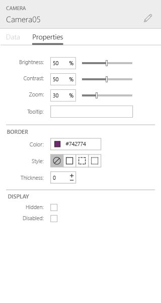

Microsoft
365 PowerApps
My first contract at Microsoft landed me on the PowerApps launch team. PowerApps is a WYSIWYG design product for building mobile apps using data pulled from Azure. I spent the first five months there designing micro-interactions and helping to polish UI assets. Eventually I was also able to help prototype new features and design the onboarding experience. It was a great contract that helped me build my fundamentals of design and also taught me to work on a large design team.
PowerApps UI designs: I designed various pieces of the PowerApps product to help push it to release.
Breadcrumbs for selections showed where the selection was in the element tree.
The properties menu needed a few updates as well
I also tightened up the frame UI to help with vertical space issues

PowerApps Tablet app prototype: I started with wireframes of the tablet app where we started working on css grid interactions.


PowerApps Landing page: I worked with a number of stakeholders to design the PowerApps landing page. As is typical with larger companies, the more cooks in the kitchen the longer things take. I spent a few months iterating on this design before landing on something sage. In the end, it worked as intended.
Visual Studio Onboarding
This project is a bit outside the realm of ux/ui and falls more into the marketing field. Nonetheless, it was an interesting project. When a user downloads Visual Studio, there is no customization that takes place. Just a full download, then the user figured out what they needed after the fact. Our goal was to narrow down the options from “everything” to “some things” and provide the user with what they would need for a given project or language. So, if someone wanted to use VS for a python project, we would package everything they need for that to hopefully limit setup time.
Mobile design is a fun change of pace from designing desktop software. The limitations from screen size and interaction method are fun challenges, especially when designing for a product like smartsheet. Spreadsheets are notoriously not mobile friendly.
Our secondary objective was to provide getting started tutorials for each option. The goal was to have a user new to that language complete a simple project on their first go. A lot of VS downloads are people just checking it out but having no idea of where to start. If we could guide them through their first project to completion, the thought was that it would give them confidence in the platform and would keep them around.
I worked directly with the program manager on this. We did a number of in person user tests with students and novice users. We also made a basic A/B test for our landing page trying to get information on the type of content users were looking for.
Ultimately, I was only working on the project for a couple of months before my contract ended. I’m not sure if the project was ever continued or if the learnings were translated into useful content.
Users were being dumped into the base software without and guidance and dozens of options

After this change we started putting users into pre-packaged instances based on their method of entry
The new dowload page gave us better insight into what users were planning to use Visual Studio for